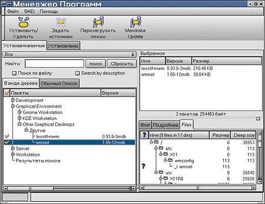
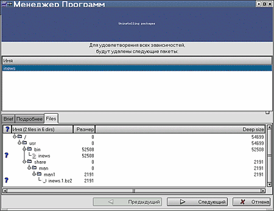

Наращивание мощи
Автор: Алексей Федорчук,
[email protected]Опубликовано:
22.11.2001
Оригинал: http://www.softerra.ru/freeos/14173/
Одна из проблем, рано или поздно встающих перед
любым пользователем Linux — это расширение функциональности системы,
иными словами — установка программного обеспечения. До недавнего
времени она имела одно решение: выискивание в Сети необходимого софта, его
скачивание и, в общем случае, сборка из исходников.
Ныне к этому методу требуется прибегать только
при установке новосозданных (или модифицированных) программ: практически все
современные дистрибутивы включают в себя почти весь мыслимый софт общего (а
подчас и специального) назначения, заботливо скомпилированный создателями в виде
пакетов. Это могут быть архивы tgz с инсталляционными скриптами в Slackware,
deb-пакеты в Debian и ее вымирающих потомках, или пакеты rpm в Red Hat и его
многочисленных отпрысках.
Именно rpm-пакеты получили наибольшее
распространение в Linux-системах — даже в дистрибутивах, исторически с
Red Hat не связанных. Причин тому много, но не последняя из
них — удобная система управления пакетами этого формата.
Однако — только при соблюдении двух условий.
Первое — понимание взаимозависимостей пакетов. Разумеется, в ответ на
попытку установить пакет, зависимости нарушающий, последует сообщение,
перечисляющее те компоненты, которые требуется иметь в системе для нормального
функционирования данного приложения, после чего их не так сложно разыскать и
инсталлировать, но — и тут вступает в силу второе
условие, — если требуемые для удовлетворения зависимостей пакеты
находятся на том же носителе. И пока объем дистрибутивов сводился к одному-двум
CD-дискам, отыскать все требуемые пакеты труда не составляло, однако ныне
ситуация изменилась: развитые современные дистрибутивы включают 3-5 и более
дисков, просмотреть которые на предмет недостающих библиотек — занятие
не из самых веселых. Это поневоле вызывает тоску по утилитам типа sysinstall из
FreeBSD, берущих на себя заботу об удовлетворении зависимостей при установке
пакетов — впрочем, не освобождающих пользователя от необходимости
смены дисков и перечитывания источников инсталляции.
И потому каждый, кому приходилось перерывать
стопу сидюшников в поисках требуемого *.so-файла, не может не оценить
прогрессивную инициативу создателей Linux Mandrake, реализованную в последних
версиях этого дистрибутива и получившую имя Software Manager. Имя сие, может
быть, не блещет свежестью и оригинальностью, но зато хорошо отражает суть дела:
это средство для автоматизации установки и удаления программ.
Получить доступ к нему можно через пиктограмму
на рабочем столе (называемую Mandrake Control Center, что может ввести в
заблуждение, поскольку то же имя носит и утилита для глобального
конфигурирования системы), через стартовое меню, например, KDE (K ->
Настройка -> Пакеты -> Software Manager или Mandrake Update), а также
командой drakconf в командной строке терминала.
Первое, что происходит по запуске утилиты
Software Manager- это запрос пароля администратора: естественное требование,
поскольку только root имеет возможность изменения базы данных rpm-пакетов; да и
установка их по умолчанию происходит в каталог /usr, закрытый для модификации
пользователями.
Далее появляется панель с угрожающим сообщением,
напоминающим, что не худо бы настроить источник обновления системы с точки
зрения безопасности. Впрочем, это предупреждение относится только к обновлению
по Сети: я забыл сказать, что Software Manager позволяет произвести таковое не
только с локального носителя (сиречь дистрибутивных дисков), но и с ftp-сервера
Mandrake-Soft. Так что в большинстве случаев его можно хладнокровно
проигнорировать или отказаться от вывода этого сообщения раз и навсегда.
После этого, наконец, появляется окно управления
программами (рис. 1). По умолчанию в левой панели его в виде дерева выведены
пакеты, доступные для установки, но не установленные. В случае локального
источника это программы, входящие в состав дистрибутива (то есть расположенные
на CD-дисках). Впрочем, можно вывести здесь и пакеты установленные, которые,
соответственно, могут быть удалены.

Рисунок 1. Окно управления
программами
Список пакетов, отмеченных для установки (или
удаления), выводится в правой верхней панели. В нижней же панели справа дается
информация о текущем пакете в различных видах:
- кратком (имя пакета, номер версии и маленькая аннотация);
- подробном, включающем URL официального сайта, сведения о разработчиках и
сборщиках, и т.д.;
- полном, содержащем положение всех файлов пакета в дереве каталогов
системы.
Удаление пакетов происходит просто и
буднично — сначала выводится информация об удаляемом пакете, причем
можно просмотреть все входящие в его состав компоненты (рис. 2). После этого
можно перейти собственно к деинсталляции.

Рисунок 2. Удаление пакетов с помощью Software
Manager
Самое интересное, однако, происходит при
установке пакетов. Сначала программа быстро осуществляет проверку зависимостей
для выбранных компонентов дистрибутива, а затем запрашивает требуемый диск из
комплекта (самое милое, что лоток для CD выдвигается автоматически). Если
пакеты, связанные зависимостями с выбранными для установки находятся на разных
дисках, в ходе инсталляции последуют запросы на соответствующие CD, также с
автоматическим выдвижением лотка.
Иными словами, Software Manager не просто
избавляет от необходимости изучения взаимозависимости пакетов и просмотра
многочисленных дисков, но и позволяет не тратить много времени на ручной выбор
при установке дистрибутива. Простота процедуры доустановки всех компонентов,
которые могут понадобиться впредь, дает возможность на начальном этапе
ограничиться необходимым минимумом — лишь тем, что гарантированно
востребуется с самого начала работы, а прочие же пакеты устанавливать по мере
возникновения потребности в них.
В результате у пользователя появляется не только
возможность, но и желание знать назначение каждого компонента системы, в которой
он работает — педагогическое значение этого переоценить трудно любому,
кто, боясь при установке дистрибутива упустить что-либо жизненно важное, после
таковой вынужден был созерцать безразмерные списки файлов в каталогах /usr/bin и
/usr/X11/bin, назначения большей части из которых он те только не знал, но и
рисковал не узнать вообще в этой жизни…
Вниманию вебмастеров: использование данной статьи возможно
только в соответствии
с правилами использования
материалов сайта «Софтерра»
(http://www.softerra.ru/site/rules/)